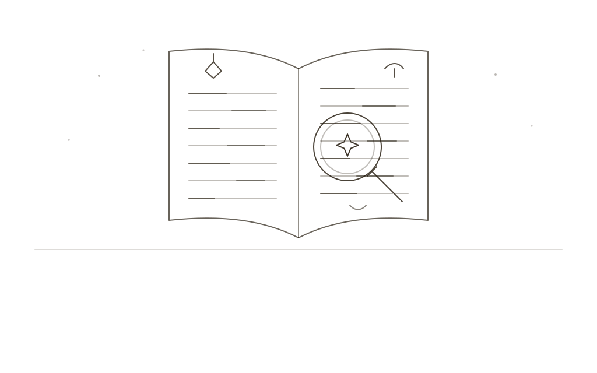

Otto is made by one person, for people who write the way I do.
I’m [name]. I write [what you write], and I have been building the same invented world since [year]. By day I [day job, if you’d like to say], in [place]. Otto began as something I made for my own notes; when other writers asked whether they could have it, it became something I make for them as well. I read every message that comes in, and I answer most of them.
Each of these costs me something to keep. Here is why I keep them.
i.It runs on your machine and nowhere else.
A world takes years. The companies that keep things for you don’t always last years, and I didn’t want anyone’s decade of work to depend on whether mine does. A file on your own disk doesn’t need me to stay in business, or to be awake, or to agree with you. It also means I can’t see your world, which is how it should be: it’s unfinished, and it’s yours.
ii.What you write stays yours.
A program that makes leaving hard is a program that doesn’t trust itself. If Otto is worth staying with, you’ll stay; the export is there so the choice is a real one. The backups before every update and the history on every entry are there because I have lost work to software, and I would rather spend disk space than spend your evenings.
iii.The built-in kinds are fixed; what you add sits alongside.
I have had tools rename my categories in an update and quietly undo years of sorting. So Otto’s own kinds of thing are fixed, which stops me from ever “improving” them out from under you, and the forms and categories you make sit beside them, where no update can reach. Yours are only ever yours to change.